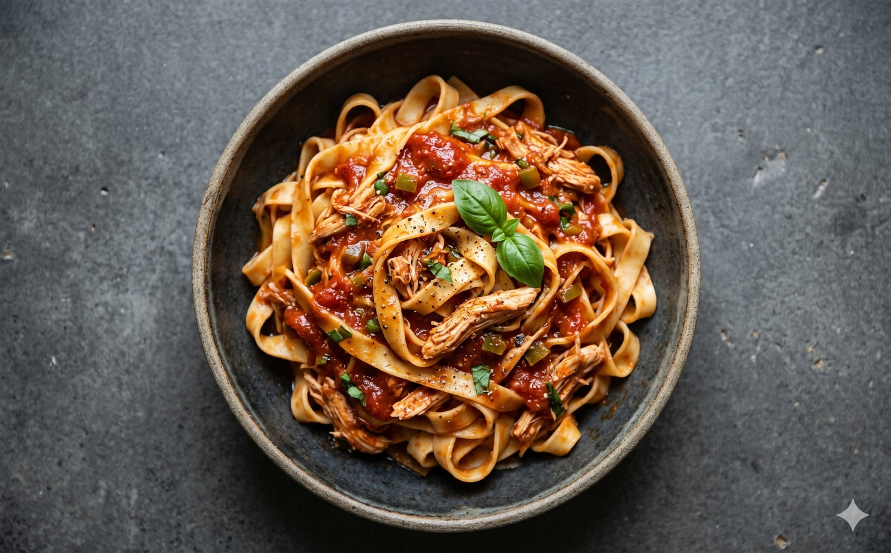

Tomato, basil, and a quiet bite from the serranos. Slow-cook it, shred the chicken right in the pot, toss it with pasta. Forgiving enough to walk away from.

| Item | Amount | Notes |
|---|---|---|
| Chicken breast | 2 lb / 907 g | Cut into large chunks |
| Tomato & basil sauce | 2 jars · 24 oz ea | 680 g each |
| Onions | 1 or 2 medium | Finely chopped |
| Serrano peppers | 2 or 3 | Finely diced |
| Tomato paste | 2 tbsp / 30 g | Adds depth |
| Apple cider vinegar | 1 tbsp / 15 g | Lifts the sauce |
| Raw sugar | 1 tsp / 5 g | Unprocessed, balances the vinegar |
| Salt | 1 tsp / 6 g | Adjust at the end |
| Red pepper flakes | ½ tsp / 1 g | To taste |
| Dried pasta | 1 lb / 450 g | Fettuccine, penne, or elbows |
Chop the onions and serranos. Slice the chicken breasts into large, even chunks so they shred cleanly later.
Set the multi-cooker to Sear / Sauté at 400°F. Once hot, add the onions and serranos. Cook for 3 to 5 minutes until the onions soften and turn translucent.
Turn off Sauté. Add the chicken, both jars of sauce, tomato paste, apple cider vinegar, raw sugar, salt, and red pepper flakes. Stir until every chunk of chicken is coated.
Dry the outside of the inner pot, drop it in, and lock the lid. Set Slow Cook → Low → 7 hours. Walk away.
About 15 minutes before the chicken is done, boil the pasta on the induction cooktop until al dente. Drain it, but save a splash of pasta water in case the sauce needs loosening.
Shred the chicken right in the pot with two forks. Fold in the cooked pasta. Taste. A final pinch of salt, maybe a thread of pasta water, and serve hot.
The vinegar and raw sugar are doing more than you think. They lift the tomato and basil and keep the heat in balance. Make it as written the first time, then change whatever you want.